Šedivých zimních dnů ubylo, sníh nám (už snad definitivně) roztál, a tak to vypadá, že k nám konečně zase přichází jaro a s ním i počasí přející výletům! O víkendu jsme tedy s Péťou podnikli první malý jarní výlet na Slovensko - volba padla na Bratislavu, protože tam ani jeden z nás ještě nikdy nebyl a navíc je to z Brna opravdu kousíček. Ještě teď nemůžu chodit, ale ta spousta zážitků za to určitě stála :-)!
Na cestu jsme se vydali v sobotu ráno a díky uhánějícímu ECčku jsme už za hodinu a půl stáli na bratislavském nádraží. Sluníčko na obloze slibovalo hezký den a sotva jsme se trochu zorientovali, vyrazili jsme do centra hledat náš hostel, abychom se mohli ubytovat a hned se vydat obhlídnout město. Docela mě překvapilo, jak je ve slovenské metropoli v sobotu ráno mrtvo :D. Hostel se nám podařilo nalézt celkem bez obtíží, nachází se v těsné blízkosti prezidentského paláce. Když jsme ale vstoupili dovnitř budovy, vypadalo to, že nejsme vůbec očekáváni :D - recepce totiž byla zamčená a nikde ani noha. Protože jsem organizací ubytování byla pověřena já, trochu mě polilo horko a začala jsem uvažovat, kde dnes budeme nocovat, pokud ubytování v hostelu krachne :D…Naštěstí jsme na dveřích objevili nápis s telefonním číslem, na kterém můžeme majitele hostelu v případě nepřítomnosti zastihnout, takže jsme mu poslali SMSku a během dvou minut nám zavolal, že už je na cestě do práce. Trochu se mi ulevilo, ale ne příliš udržované prostředí panelákové chodby ve mně moc důvěry zatím nevzbuzovalo - zvlášť když jsem si vzpomněla na krásné webové stránky hostelu, nad kterýma jsem se rozplývala a jásala, jak se mi povedlo sehnat báječné a levné ubytování :D. Naštěstí se vše brzy osvětlilo, když dorazil majitel - mladý týpek pomalu našeho věku, který nás očekával až v 11, jak jsem uvedla při rezervaci do mailu (nechala jsem nám časovou rezervu, protože jsem si nebyla jistá, jak rychle se nám podaří hostel najít). To ale samozřejmě nic nemění na faktu, že na webových stránkách měli uvedeno, že recepce je otevřená od 8 do 18ti hodin 8-) …Náš pokoj tedy ještě nebyl uklizený a ubytovat jsme se zatím nemohli. Když nám ale týpek sdělil, že během půl hodiny bude vše připraveno a můžeme zatím počkat v útulném prostředí recepce a využít počítače s internetem, vzali jsme ho na milost 8-) . Volný čas jsme alespoň využili k tomu, že jsme si naplánovali trasu, kterou zvolíme pro obhlídku města, a stáhneme si informace o keškách, na které jsme měli políčeno.
Sotva jsme měli hotovo, už tu byl týpek s tím, že se můžeme jít ubytovat. Ukořistili jsme ještě na recepci mapku a nechali si v ní vyznačit zajímavá místa a dobré restaurace :-) a šli se podívat do našeho pokojíčku v prvním patře. Ten mě zase prozměnu příjemně překvapil svou útulností a vybavením včetně televize, wi-fi nebo varné konvice i s několika druhy čaje. Teď už bylo jisté, že máme dnes večer kde hlavu složit a dokonce to bude ve velmi příjemném prostředí, a tak už jsem se celá šťastná nemohla dočkat, až vyrazíme ven.
Jako první vedly naše kroky k prezidentskému paláci, který se nacházel od našeho hostelu coby kamenem. K paláci patří i nádherný park, kam jsme si šli ulovit první bratislavskou kešku :-)! Zajímavostí tohoto parku je prezidentská alej, která vznikla za vlády prezidenta Schustera a tvoří ji stromy zasazené hlavami států různých zemí - mimo jiné je tu k vidění také strom zasazený našim bývalým prezidentem Havlem.
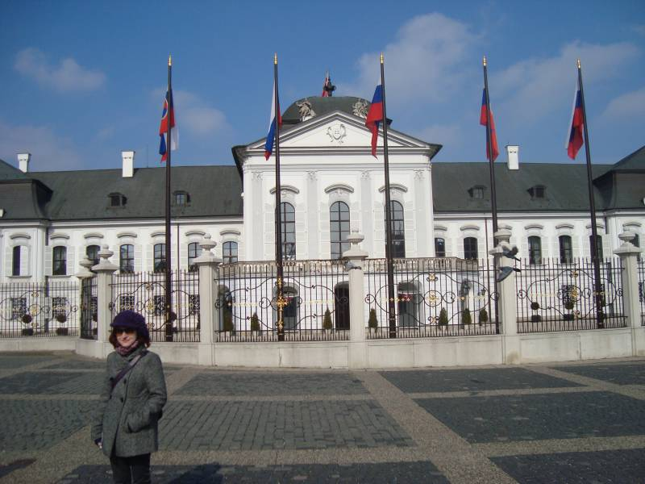
Před Prezidentským palácem
S první odlovenou keškou jsme pokračovali do poněkud méně malebné části Bratislavy a cestou jsme míjeli například děsivě obrovskou a děsivě zanedbanou fontánu, která vypadala, že dobře pamatuje minulý režim, nebo chemickou fakultu, u které nás zaujala vtipná Mendělejevova socha s periodickou soustavou prvků :-).
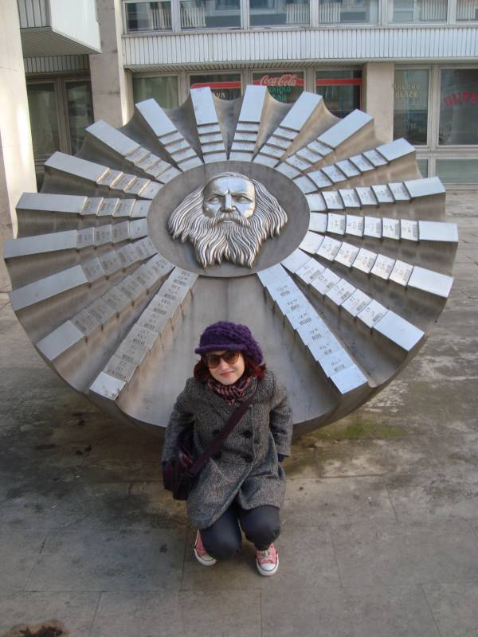
Mendělejev a bývalý chemik :)
Během prvního dne jsme velice rychle zjistili, že centrum Bratislavy je vpodstatě strašně maličké a všude je to blízko. Všechny důležité památky jsou od sebe vzdálené většinou jen pár minut chůze. Proto jsme se při kešování neustále motali v centru a ikdyž jsme měli dojem, že jsme nachodili spoustu mil, nevzdálili jsme se od hostelu víc než na půl hodinky cesty. Bratislava jako město na mě zapůsobila dost rozporuplně - na jednu stranu tu člověk narazí na nádherné a zajímavé stavby, zejména v historickém centru, na druhou stranu ale může zabloudit i do míst, která působí dost zanedbaně a neudržovaně, prostě tak nějak průmyslově a socialisticky. Když pak takové dvě kontrastní budovy stojí vedle sebe, člověk z toho má dost rozpačitý dojem. Historické centrum je ale opravdu velice hezké a upravené a navíc nabízí i zajímavou kuriozitu v podobě několika vtipných soch rozmístěných v uličkách Starého Města :-)…
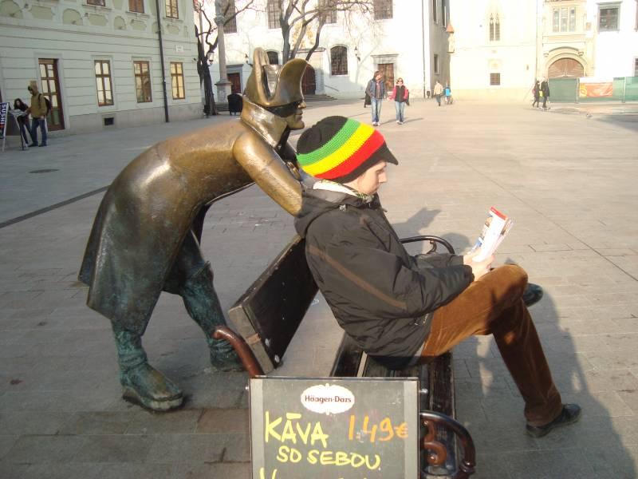
Péťa a Napoleonský voják :)
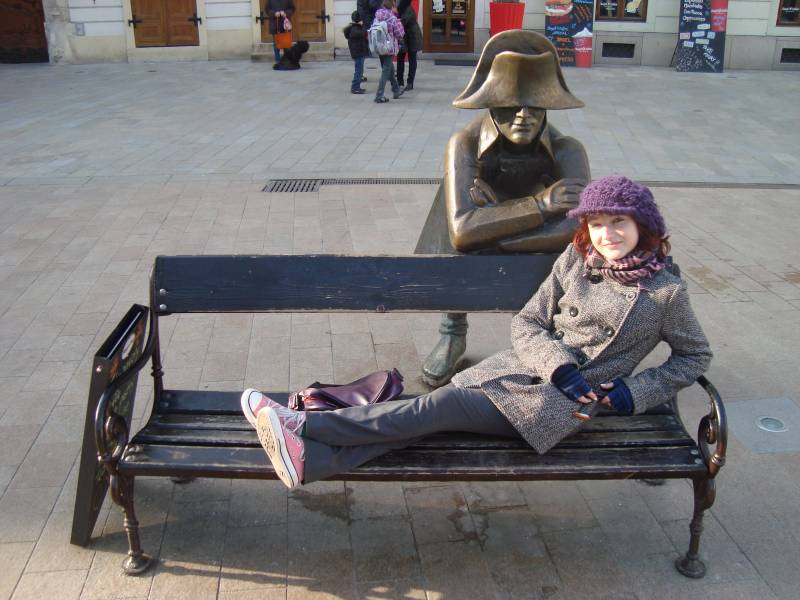
Lehárko na Hlavním náměstí
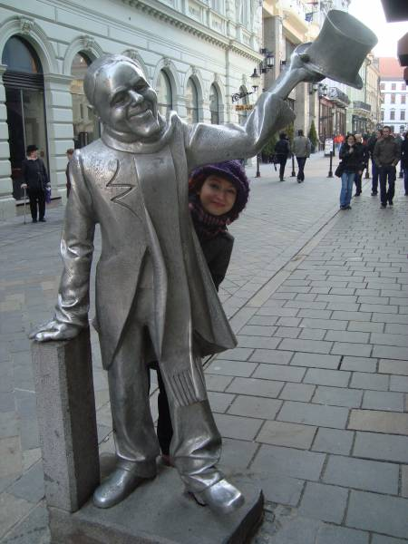
Švihák ;)
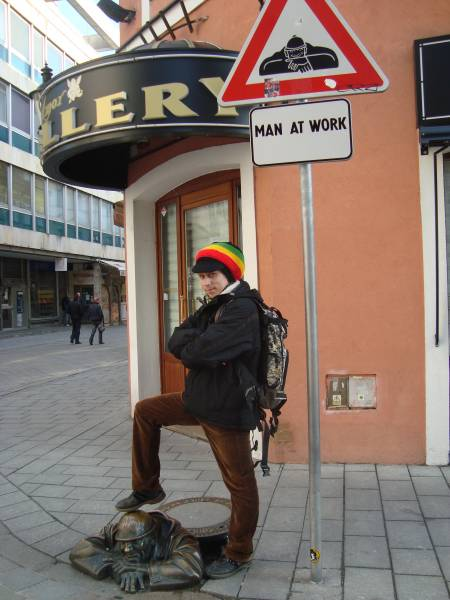
Péťa a Čumil :)
Krom těchto bratislavských kuriozit jsme samozřejmě viděli i řadu klasických památek, jako Slovenské národní divadlo, Michalskou bránu a vedle ní nejužší bratislavský dům, který měří v průčelí jen 130 cm :O…Na dlažbě pod Michalskou bránou nás pak ještě zaujal kompas se zakreslenými světovými metropolemi, a tak jsme pro naši kamarádku Phyllis vyfotili, jak daleko to máme z Bratislavy do Hong Kongu :))…
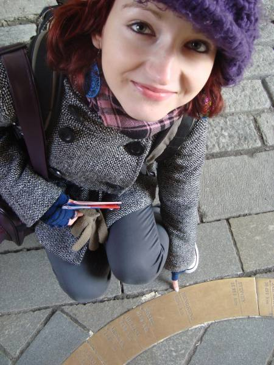
Mooooooc daleko :)!
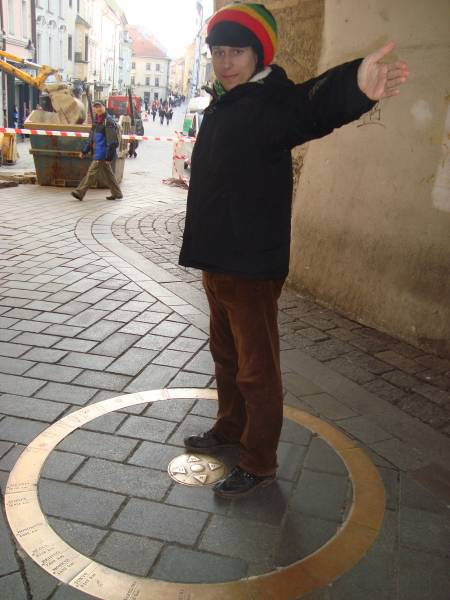
Asi taaaaakhle!
V sobotu jsme centrum prolezli jen tak zlehka s tím, že na druhý den si ho ještě dosyta užijeme, a vpodvečer jsme se vydali na procházku po nábřeží, dokud nám sluníčko přálo. Na břehu Dunaje mi znovu došlo, jak kontrastní město Bratislava je. Protože z mého pohledu nám tady slovenská metropole ukázala svou nejkrásnější tvář :-)…
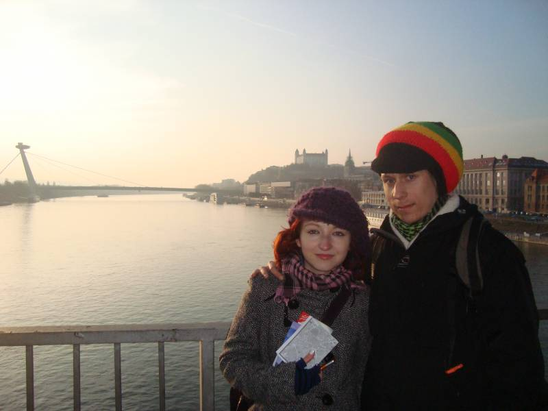
Dunaj a my
Na nábřeží a řeky jsem tak trochu ujetá (o řece Moravě jsem psala i maturitní slohovku :D), ale ospalé sluníčko ten den vylákalo k Dunaji spoustu lidí, což mě jen utvrdilo v tom, že se skutečně nacházíme na jednom z nejkrásnějších míst v Bratislavě a nejsem až tak moc zaujatá :D. Při této procházce si nešlo nepovšimnout rozsáhlého komplexu budov, který se táhne téměř po celé délce břehu mezi starým a novým mostem. Zpočátku jsem si myslela, že se v něm nachází jen nějaké kavárny a restaurace, ale když jsme došli blíž, zjistili jsme, že se jedná o obří nákupní galerii na způsob naší brněnské Vaňkovky, ale mnohem větší, hezčí a luxusnější. Docela se nám hodila do krámu, protože u řeky dosti přituhlo, a za touhou podívat se dovnitř honosného obchoďáku Eurovea jsem skrývala skromné přání pořádně se ohřát :D. Nebyla jsem zklamána, Eurovea byla krásně přetopená přesně podle mého gusta :D! Protože sluníčko už začalo zapadat, rychle jsme vyrobili několik posledních romantických fotek s Dunajem, a vypravili jsme se pro kešku k novému mostu.
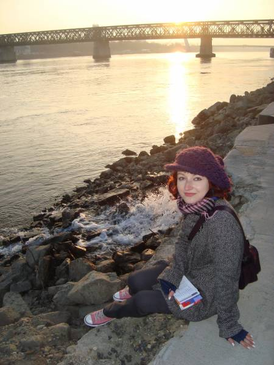
Trocha romantiky o:-)
Při lovu jsme byli úspěšní a to i přesto, že jsme si popletli hinty a hledali jsme podle špatné nápovědy :D - prolomili jsme tak naši smůlu mostových kešek a mohli jsme se šťastní a ztuhlí zimou vydat domů. Cestou jsme se ještě stavili v Eurovee pro vínečko, brambůrky a olivy na večer a nakonec jsme zapadli do jedné stylové hospůdky na náměstí Slovenského národního povstání, kterou nám doporučil týpek z hostelu, a pořádně se tam nadlábli :-). To už jsme přecejen začali pociťovat únavu a bolavé nožky, takže není divu, že jsme záhy po příchodu na pokoj odpadli na postel. Nakopla nás jenom vidina vínečka, po kterém se nám spalo ještě líp :-)!
Na druhý den jsme se pěkně odpočatí vydali prozkoumat pravděpodobně nejznámější bratislavskou památku - místní hrad. Dovnitř se budeme muset podívat někdy příště, protože na hradě právě probíhá rozsáhlá rekonstrukce, ale výhled na město byl nádherný.
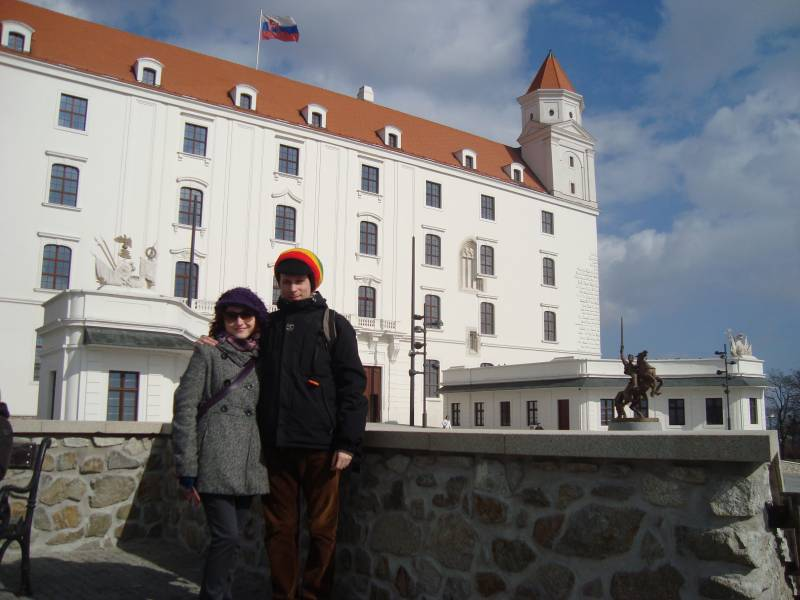
My a hrad :)
V parku pod hradem se nám málem podařilo ztratit :D - chvíli nám trvalo, než jsme narazili na tu správnou cestičku, která by nás zavedla k zámeckým schodům vedoucím do centra. Nakonec se nám ale podařilo najít ten správný chodník a vylezli jsme přímo u mostu s “UFEM” :D. Na něm se skrývala další keška a přestože byla “mostová”, našli jsme ji celkem hravě :-). Při procházce po nábřeží nám už celkem vyhládlo, a tak jsme se rozhodli vrátit do centra a navštívit další z doporučených podniků a naobědvat se. Obě dvě restaurace, které jsme v Bratislavě navštívili, byly obrovské a stylově zařízené. První vítězila interiérem - vypadalo to, že se jedná o nějaký přebudovaný kulturák s bárem přímo pod pódiem. Co se ale týče jídla, suverénně zvítězila Slovak pub na Obchodné ulici. Dali jsme si stylově bryndzové halušky a během minuty se po nich doslova zaprášilo :D - mno, mám ještě v kuchyni co zdokonalovat :D!
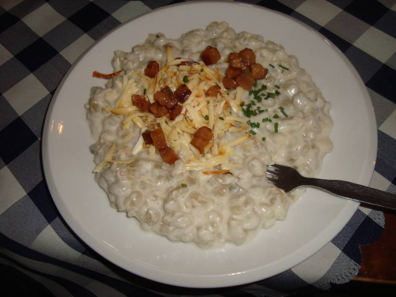
Co dodat - dobrota :)!
Takto posilněni jsme se opět vydali zkoumat malebné uličky bratislavského centra a posbírat při té příležitosti několik kešek. Díky kešování jsme objevili další zajímavou místní kuriozitu - zvonkohru - devět “dlaždiček”, které po došlápnutí hrály :D! Tahle atrakce fascinovala hlavně děti a byli jsme svědky toho, že už způsobila nejedno rozbité koleno :D. Solidárně jsem si taky trochu zafňukala, protože jsem chytla křeč do nohy :D. Naše další kroky vedly na Františkánské náměstí, jehož zajímavost se rovněž nachází na dlažbě - jedná se o několik dlaždiček ozdobených všemožnými obrázky - například ústy Franka Sinatry, hehe :D. Čas se pomalu nachýlil, a protože jsme chtěli stihnout vlak v 6 hodin, vydali jsme se za poslední zajímavou bratislavskou památkou - secesním Modrým kostelíkem. Je skutečně modrý od hlavy až k patě (včetně střechy), a protože jsme nakoukli i dovnitř, můžeme potvrdit, že má dokonce i modré lavice :)!!! Vypadá zkrátka jako vyloupnutý z nějaké pohádky :-)…
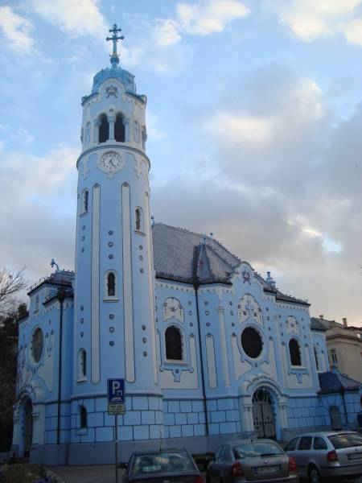
Modrá je dobrá :)
Tato optimistická modrá tečka byla příjemným završením našeho výletu do Bratislavy a navzdory bolavé noze a vlaku nacpanému k prasknutí jsem byla šťastná, že se nám to takhle pěkně vyvedlo - včetně počasí :-). Bratislava je rozhodně město, které stojí za vidění, a protože jsme už nestihli plánovaný výlet na Děvínský hrad, určitě se sem ještě někdy vrátíme. Do té doby budeme alespoň vzpomínat na tenhle příjemný březnový víkend :-)…
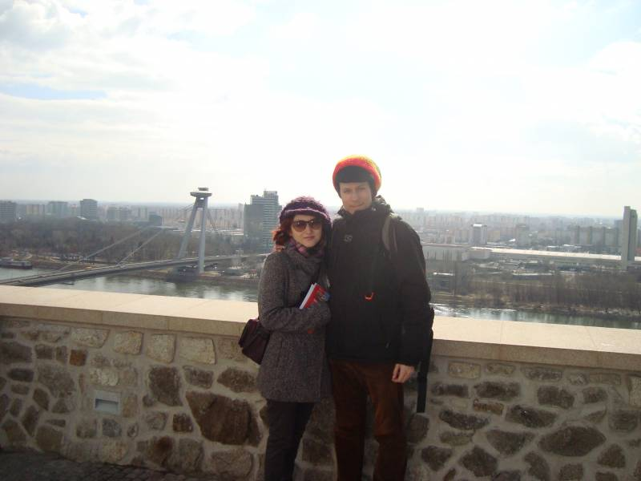
Milíčovi a Bratislava :)
Komentáře (5)
Komentáře jsou uzavřené.